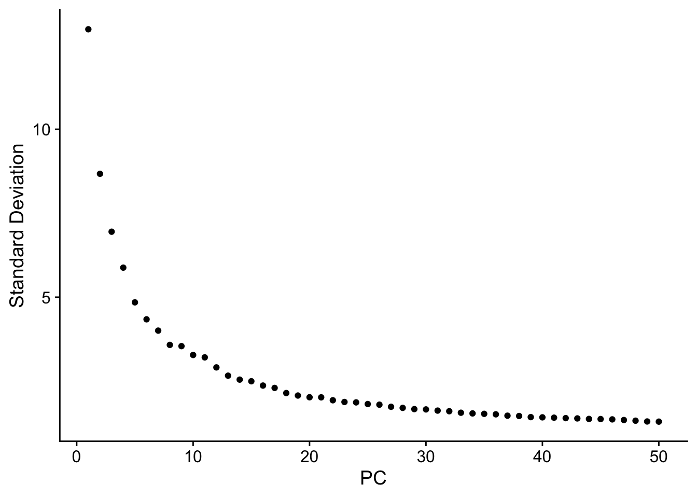
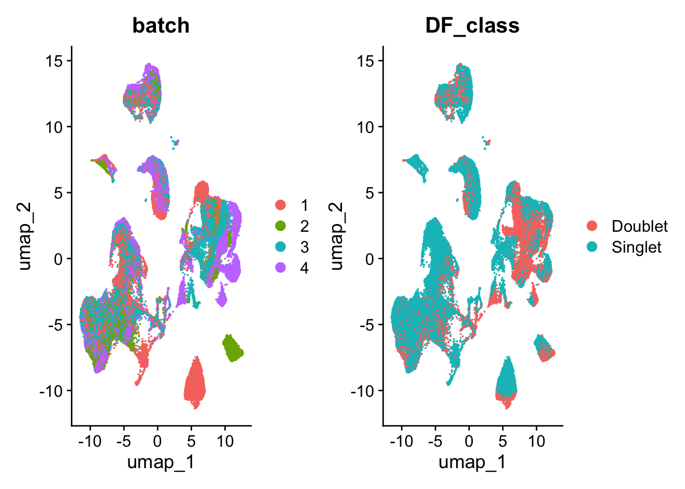
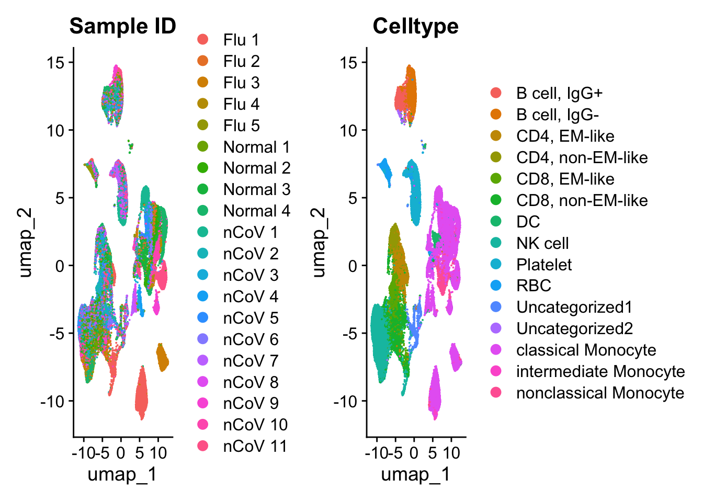
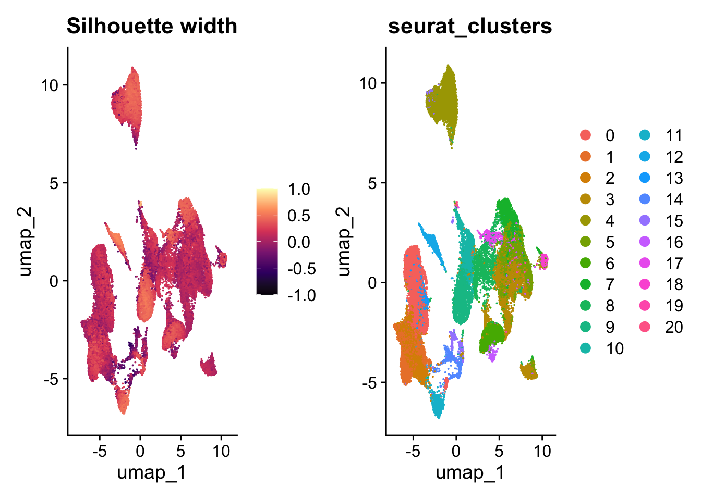

if (!requireNamespace("tidyverse", quietly = TRUE))
install.packages('tidyverse')
if (!requireNamespace("Seurat", quietly = TRUE))
install.packages('Seurat')
if (!requireNamespace("colorBlindness", quietly = TRUE))
install.packages('colorBlindness')
if (!requireNamespace("RColorBrewer", quietly = TRUE))
install.packages('RColorBrewer')
if (!requireNamespace("cluster", quietly = TRUE))
install.packages('cluster')6 - Clustering
Clustering
Load Libraries and Data
Libraries
suppressPackageStartupMessages({
library(dplyr)
library(Seurat)
library(tidyverse)
library(RColorBrewer)
library(colorBlindness)
library(DoubletFinder)
library(cluster)
})Warning: package 'SeuratObject' was built under R version 4.3.3set.seed(687)Load Data
# Load the Seurat object with doublet and batch information
se <- readRDS('../data/workshop-data-withDFinfo.rds')
se An object of class Seurat
33234 features across 59572 samples within 1 assay
Active assay: RNA (33234 features, 3000 variable features)
3 layers present: counts, data, scale.data
2 dimensional reductions calculated: pca, umap# Set color palette
pal <- paletteMartin
names(pal) <- sort(unique(se$Celltype))
# # Load a provided gene conversion table to convert ENSG to readable gene symbols
# genes <- read_csv('../data/cov_flu_gene_names_table.csv')
#
# # Remake Seurat object
# mtx <- se@assays$RNA@data
# rownames(mtx) <- genes[match(row.names(mtx),genes$index), ]$feature_name
#
# se <- CreateSeuratObject(counts = mtx, meta.data = se@meta.data)
#
# se
# rm(mtx)Preprocessing
# se <- se %>%
# NormalizeData(verbose = FALSE) %>%
# FindVariableFeatures(
# method = "vst",
# nfeatures = 3000,
# verbose = FALSE) %>%
# ScaleData(verbose = FALSE) %>%
# RunPCA(verbose = FALSE) %>%
# FindNeighbors %>%
# FindClusters(resolution = 0.5) %>%
# RunUMAP(dims = 1:30, verbose = FALSE, n.components=3L)
ElbowPlot(se, ndims = 50)
UMAP of Counts and QC Metrics
library(ggplot2)
# Convert the 'batch' variable to a character
se@meta.data$batch <- as.character(se@meta.data$batch)
d1 <- DimPlot(se,
reduction='umap',
group.by='batch')
d2 <- DimPlot(se,
reduction='umap',
group.by='DF_class')
d3 <- DimPlot(se,
reduction='umap',
group.by='Sample ID')
d4 <- DimPlot(se,
reduction='umap',
group.by='Celltype')
d1 | d2
d3 | d4
Clustering
se1 <- se
se <- se1 %>%
NormalizeData(verbose = FALSE) %>%
FindVariableFeatures(
method = "vst",
nfeatures = 3000,
verbose = FALSE) %>%
ScaleData(verbose = FALSE) %>%
RunPCA(verbose = FALSE) %>%
FindNeighbors %>%
FindClusters(resolution = 0.5) %>%
RunUMAP(dims = 1:30, verbose = FALSE, n.components=3L)Computing nearest neighbor graphComputing SNNModularity Optimizer version 1.3.0 by Ludo Waltman and Nees Jan van Eck
Number of nodes: 59572
Number of edges: 1894745
Running Louvain algorithm...
Maximum modularity in 10 random starts: 0.9287
Number of communities: 21
Elapsed time: 14 secondsWarning: The default method for RunUMAP has changed from calling Python UMAP via reticulate to the R-native UWOT using the cosine metric
To use Python UMAP via reticulate, set umap.method to 'umap-learn' and metric to 'correlation'
This message will be shown once per sessionWarning: Number of dimensions changing from 2 to 3Look at different resolutions
QC based on 2 resolutions to make a decision
Annotate Seurat object with chosen resolution & DEGs
Cluster Metrics
Cluster Diversity
1 - Number of Cells in each Cluster
2 - Which samples are in each cluster
3 - Stacked Bar Plot of Cluster Diversity
Silhouette Analysis
As covered in the last workshop, silhouette analysis is a way to measure how similar an object is to its own cluster compared to other clusters. The silhouette value ranges from -1 to 1, where a high value indicates that the object is well matched to its own cluster and poorly matched to neighboring clusters.
seurat_clusters <- se@meta.data$seurat_clusters
pca_embeddings <- Embeddings(se, reduction = 'pca')
# Calculate silhouette widths
sil_scores <- silhouette(x = as.numeric(seurat_clusters), dist = dist(pca_embeddings))
# Extract silhouette scores
silhouette_data <- as.data.frame(sil_scores)
# Recover cell type names
silhouette_data$seurat_clusters <- as.character(seurat_clusters)
row.names(silhouette_data) <- row.names(pca_embeddings)
silhouette_arranged <- silhouette_data %>%
group_by(seurat_clusters) %>%
arrange(-sil_width)overall_average <- silhouette_arranged %>%
ungroup %>%
summarize(ave = as.numeric(mean(sil_width))) %>%
pull(ave)
full_plot <- ggplot(silhouette_arranged,
aes(x = sil_width,
y = seurat_clusters,
fill = seurat_clusters,
group = seurat_clusters)) +
geom_bar(stat = "identity", position = 'dodge2') +
geom_vline(xintercept = overall_average,
color = 'red',
linetype = 'longdash') +
theme_minimal() +
labs(title = "Silhouette Analysis",
y = "Cluster",
x = "Silhouette width",
fill = "Cluster") +
theme(axis.text.y = element_text(hjust = 1, vjust = 0.5, size = 20),
axis.text.x = element_blank(),
axis.ticks.x = element_blank(),
axis.title.y = element_text(size = 20),
legend.position = "None")
full_plot
Look at silhouette scores on a UMAP
d5 <- DimPlot(se,
reduction='umap',
group.by='seurat_clusters')
se$CellID <- row.names(se@meta.data)
sil_ids <- silhouette_data %>% rownames_to_column('CellID') %>% left_join(se@meta.data)Joining with `by = join_by(CellID, seurat_clusters)`se <- AddMetaData(se, sil_ids)
FeaturePlot(se, feature = "sil_width") + ggtitle('Silhouette width') + scale_color_viridis_c(limits = c(-1,1), option = "magma") | d5Scale for colour is already present.
Adding another scale for colour, which will replace the existing scale.
Session Info
sessionInfo()R version 4.3.2 (2023-10-31)
Platform: aarch64-apple-darwin20 (64-bit)
Running under: macOS Sonoma 14.5
Matrix products: default
BLAS: /Library/Frameworks/R.framework/Versions/4.3-arm64/Resources/lib/libRblas.0.dylib
LAPACK: /Library/Frameworks/R.framework/Versions/4.3-arm64/Resources/lib/libRlapack.dylib; LAPACK version 3.11.0
locale:
[1] en_US.UTF-8/en_US.UTF-8/en_US.UTF-8/C/en_US.UTF-8/en_US.UTF-8
time zone: America/New_York
tzcode source: internal
attached base packages:
[1] stats graphics grDevices utils datasets methods base
other attached packages:
[1] cluster_2.1.6 DoubletFinder_2.0.4 colorBlindness_0.1.9
[4] RColorBrewer_1.1-3 lubridate_1.9.3 forcats_1.0.0
[7] stringr_1.5.1 purrr_1.0.2 readr_2.1.5
[10] tidyr_1.3.1 tibble_3.2.1 ggplot2_3.5.1
[13] tidyverse_2.0.0 Seurat_5.0.3 SeuratObject_5.0.2
[16] sp_2.1-4 dplyr_1.1.4
loaded via a namespace (and not attached):
[1] deldir_2.0-4 pbapply_1.7-2 gridExtra_2.3
[4] rlang_1.1.3 magrittr_2.0.3 RcppAnnoy_0.0.22
[7] spatstat.geom_3.2-9 matrixStats_1.3.0 ggridges_0.5.6
[10] compiler_4.3.2 png_0.1-8 vctrs_0.6.5
[13] reshape2_1.4.4 pkgconfig_2.0.3 fastmap_1.2.0
[16] labeling_0.4.3 utf8_1.2.4 promises_1.3.0
[19] rmarkdown_2.27 tzdb_0.4.0 xfun_0.44
[22] jsonlite_1.8.8 goftest_1.2-3 later_1.3.2
[25] spatstat.utils_3.0-4 irlba_2.3.5.1 parallel_4.3.2
[28] R6_2.5.1 ica_1.0-3 stringi_1.8.4
[31] spatstat.data_3.0-4 reticulate_1.36.1 parallelly_1.37.1
[34] lmtest_0.9-40 scattermore_1.2 Rcpp_1.0.12
[37] knitr_1.45 tensor_1.5 future.apply_1.11.2
[40] zoo_1.8-12 sctransform_0.4.1 timechange_0.3.0
[43] httpuv_1.6.15 Matrix_1.6-5 splines_4.3.2
[46] igraph_2.0.3 tidyselect_1.2.1 abind_1.4-5
[49] rstudioapi_0.16.0 yaml_2.3.8 spatstat.random_3.2-3
[52] codetools_0.2-20 miniUI_0.1.1.1 spatstat.explore_3.2-7
[55] listenv_0.9.1 lattice_0.22-6 plyr_1.8.9
[58] withr_3.0.0 shiny_1.8.1.1 ROCR_1.0-11
[61] evaluate_0.23 Rtsne_0.17 gridGraphics_0.5-1
[64] future_1.33.2 fastDummies_1.7.3 survival_3.6-4
[67] polyclip_1.10-6 fitdistrplus_1.1-11 pillar_1.9.0
[70] KernSmooth_2.23-22 plotly_4.10.4 generics_0.1.3
[73] RcppHNSW_0.6.0 hms_1.1.3 munsell_0.5.1
[76] scales_1.3.0 globals_0.16.3 xtable_1.8-4
[79] glue_1.7.0 lazyeval_0.2.2 tools_4.3.2
[82] data.table_1.15.4 RSpectra_0.16-1 RANN_2.6.1
[85] leiden_0.4.3.1 dotCall64_1.1-1 cowplot_1.1.3
[88] grid_4.3.2 colorspace_2.1-0 nlme_3.1-164
[91] patchwork_1.2.0 cli_3.6.2 spatstat.sparse_3.0-3
[94] spam_2.10-0 fansi_1.0.6 viridisLite_0.4.2
[97] uwot_0.1.16 gtable_0.3.5 digest_0.6.35
[100] progressr_0.14.0 ggrepel_0.9.5 farver_2.1.2
[103] htmlwidgets_1.6.4 htmltools_0.5.8.1 lifecycle_1.0.4
[106] httr_1.4.7 mime_0.12 MASS_7.3-60.0.1